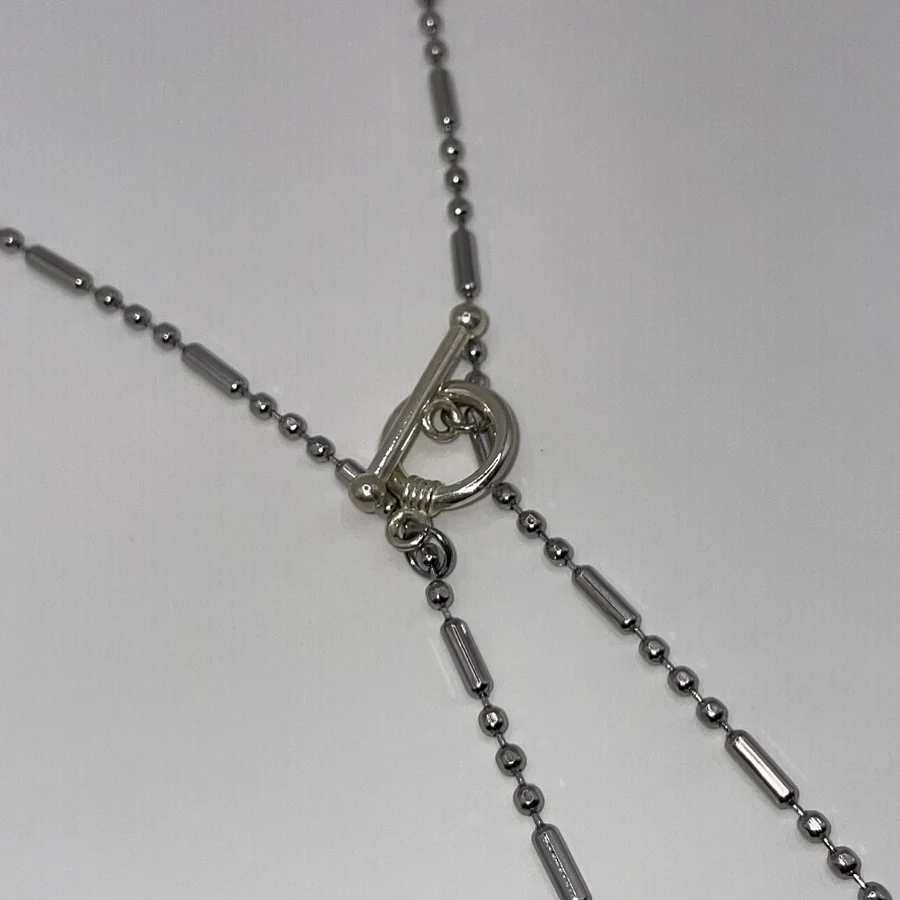
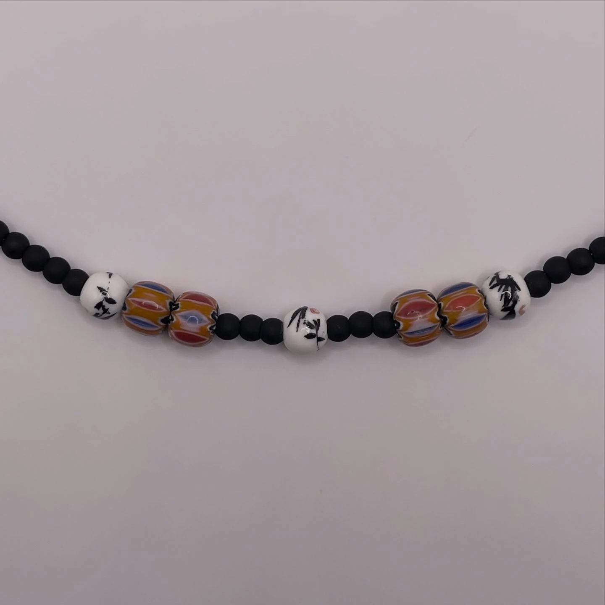
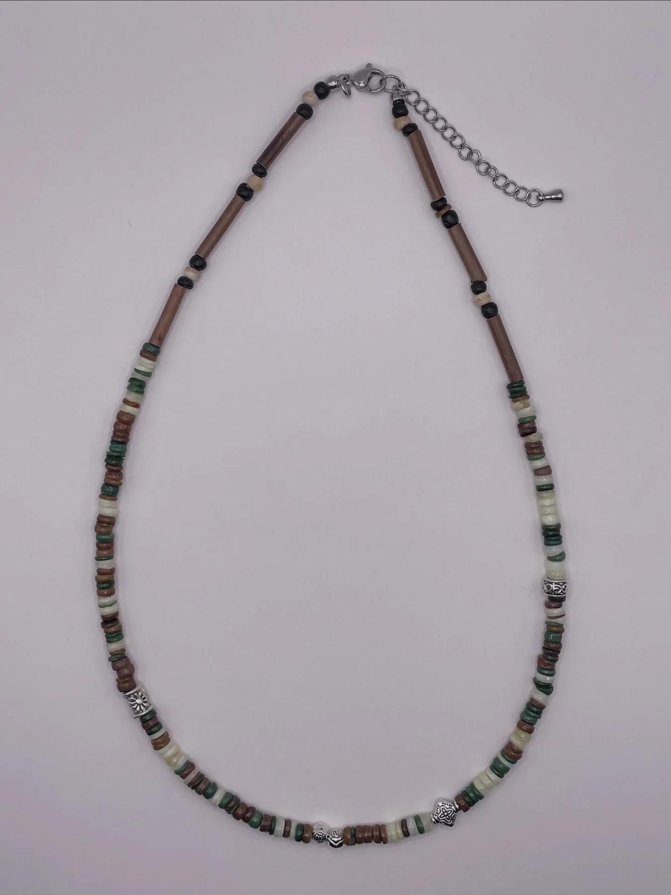
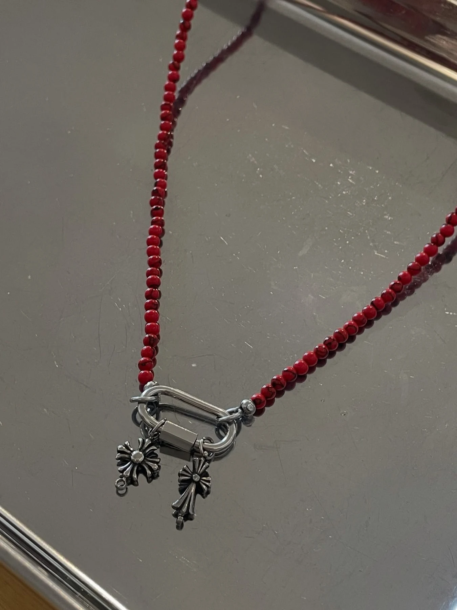

실버, 비즈, 색, 작은 참을 조합해 서로 다른 취향의 경로를 만듭니다. 제품을 클릭하면 디테일 이미지를 크게 볼 수 있습니다.
블랙 비즈 · 실버 포인트
브라운 · 로즈 톤 비즈
컬러 참 · 실버 체인

볼 체인 · 토글 디테일

블랙 비즈 · 플라워 비즈
블랙 비즈 · 버터플라이

멀티 컬러 스트라이프
비즈 · 체인 레이어드

레드 비즈 · 실버 참
실제 상품 구성, 길이, 소재와 구매 정보는 스마트스토어에서 확인할 수 있습니다.